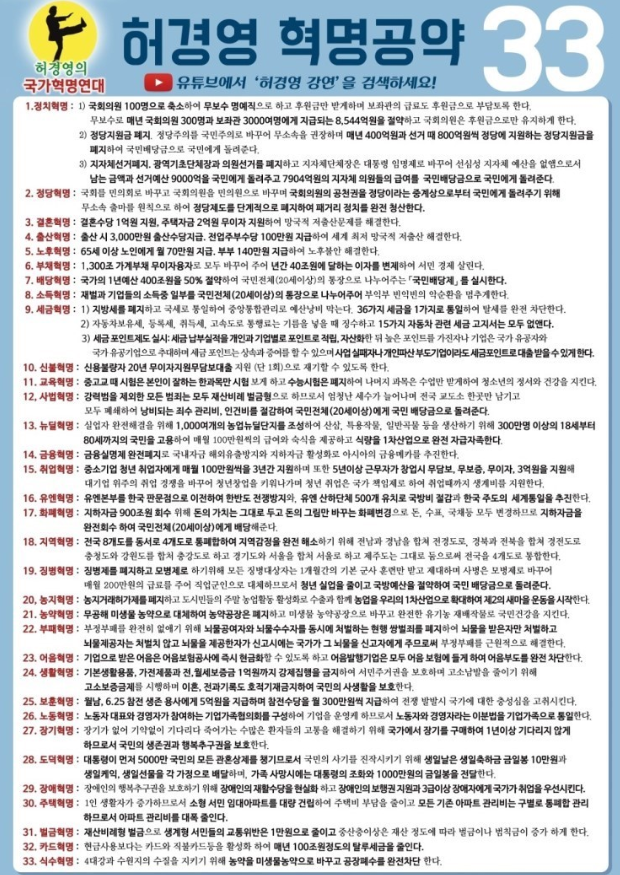
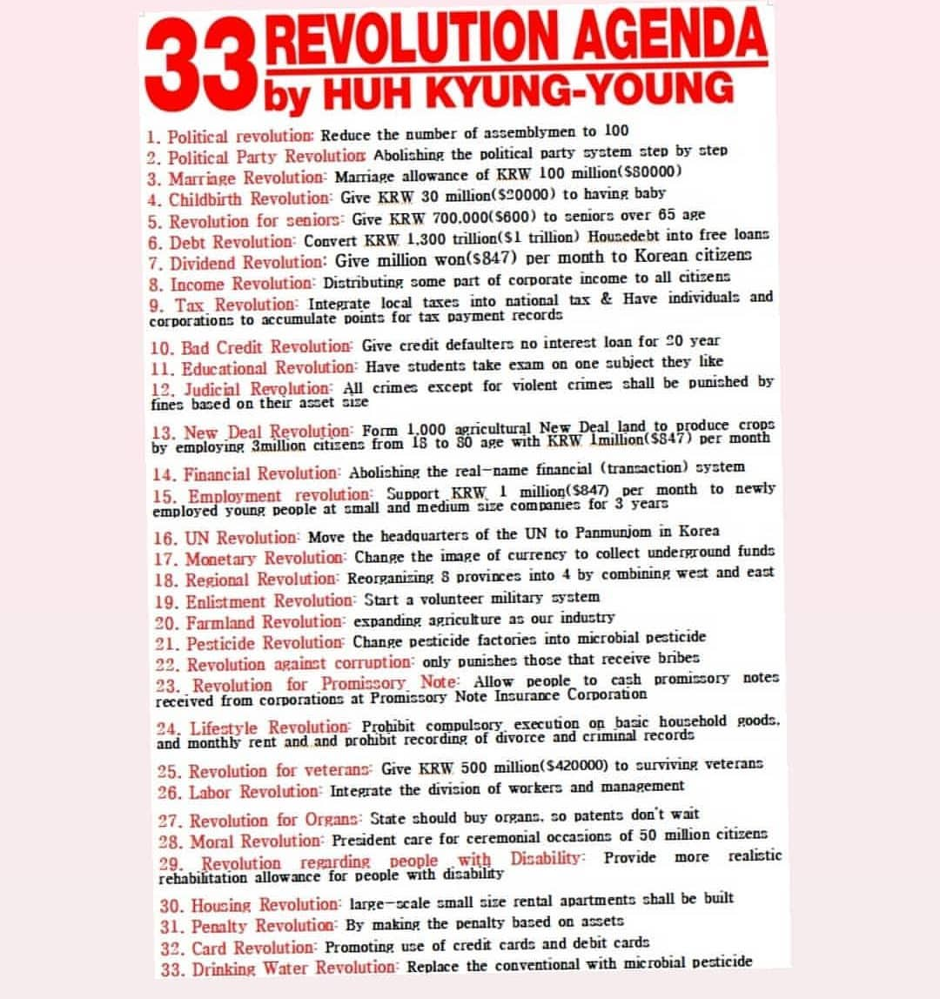

허경영
페북·유튜브
|
허경영·트럼프 |
허경영 관련서적 |
허경영33공약 |
퀴즈&댓글 |
1.정치혁명:1)국회의원100명
으로 축소하여 무보수 명예
직으로 하고 후원금만 받게
하며 보좌관의 급료도 후원
금으로 부담토록 한다.
2)정당지원금 폐지. 정당주의
를 국민주의로 바꾸어 무소
속을 권장하며 매년400억원
과 선거때800억원씩 정당에
지원하는 정당지원금을 폐지
하여 국민배당금으로 국민에
게 돌려준다.
3)지자체선거폐지.광역기초
단체장과 의원선거를 폐지하
고 지자체단체장은 대통령
임명제로 바꾸어 선심성
지자체 예산을 없앰으로서
남은 금액과 선거예산 9,000
억을 국민에게 돌려주고
7904억원의 지자체 의원들
의 급여를 국민배당금으로
국민에게 돌려준다.
2.정당혁명:국회를 민의회로
바꾸고 국회의원을 민의원으
로 바꾸며 국회의원의 공천권
을 정당이라는 중계상으로 부
터 국민에게 돌려주기 위해
무소속 출마를 원칙으로 하여
정당제도를 단계적으로 폐지
하여 패거리 정치를 완전 청
산한다
3.결혼혁명:결혼수당1억원 지
원,주택자금2억원무이자지원
하여 망국적 저출산문제를
해결한다.
4.출산혁명:출한시3,000만원
출산수당지급. 전업주부수당
100만원 지급하여 세계최저
망국적 저출산을 해결한다.
5. 노후혁명:65세 이상 노인에
게 월70만원지급 부부140만
원 지급하여 노후불안 해결한
다.
6.부채혁명: 1,300조 가계부채
무이자 융자로 모두 바꾸어
주어 년간40조에 달하는 이
자를 변제하여 서민경제 살
린다.
7.배당혁명:국가의1년예산
400조원을 50%절약하여 국
민전체(20세이상)의 통장으
로 나누어주는 "국민배당제"
를 실시한다.
8.소득혁명:재벌과 기업들의
소득중 일부를 국민전체
(20세이상)의 통장으로 나
누어주어 부익부 빈익빈의 악
순환을 멈추게 한다.
9.세금혁명:1)지방세를 폐지하
고 국세로 통일하여 중앙통합
관리로 예산 낭비 막는다.
36가지 세금을 1가지로 통합
하여 탈세를 완전 차단한다.
2)자동차보유세,등록세,취득세
고속도로 통행료는 기름을
넣을 때 징수하고 15가지 자
동차관련 세금 고지서는 모두
없앤다.
3)세금포인트제도 실시:세금
납부실적을 개인과 기업별로
포인트로 적립,자산화한 뒤
높은 보인트를 가진자나 기업
은 국가 유공자와 국가유공기
업으로 추대하며 세금 포인트
는상속과 증여 할 수 있으며
사업실패자나 개인파산 부도
기업이라도 세금포인트로
대출 받을 수 있게 한다.
10.신불혁명:신용불량자 20년
무이자지원무담보대출 지원
(단1회)으로 재기할 수 있도
록 한다.
11.교육혁명:중고교 때 시험은
본인이 잘하는 한과목만 시험
보게하고 수능,야자폐지하여
나머지 과목은 수업만 받게하
여 청소년의 정서와 건강을
지킨다.
12.사법혁명:강력범을 제외한
모든 범죄는 모두 재산비례
벌금형으로 하므로서 엄청난
세수가 늘어나며 전국 교도소
한곳만 남기고 모두 폐쇠하여
낭비되는 죄수 관리비,인건비
를 절감하여 국민전체(20세이
상)에게 국민 배당금으로 돌
려준다.
13.뉴딜혁명:실업자 완전 해결
을 위해 1,000여개외 농업뉴
딜단지를 조성하여 산삼,특용
작물,일반곡물 등을생산 하
기 위해 300만명 이상의 18세
부터 80세까지의 국민을 고용
하여 매월100만원씩의 급여
와 숙식을 제공하고 식량을
1차산업으로 완전 자급자족
한다.
14.금융혁명:금융실명제 완전
폐지로 국내자금 해외유출방
지와 지하자금 활성화로 아시
아의 금융메카로 추진한다.
15.취업혁명:중소기업 청년
취업자에게 매월100만원씩
을 3년간 지원하며 또한 5년
이상 근무자가 창업시 무담보
무보증,무이자,3억원을 지원
해 대기업 위주의 취업 경쟁
을 바꾸어 청년창업을 키워나
가며 청년 취업은 국가 책임제
로 하여 취업때까지 생계비를
지원한다.
16.유엔혁명:유엔본부를 한국
판문점으로 이전하여 한반도
전쟁방지와,유엔 산하단체
500개 유치로 국방비 절감과
한국 주도의 세계통일을 추진
한다.
17.화폐혁명:지하자금900조원
회수 위해 돈의 가치는 그대
로 두고 돈의 그림만 바꾸는
화폐변경으로 돈,수표,국채등
모두 변경하므로 지하자금을
완전회수 하여 국민전체(20
세이상)에게 배당해준다.
18.지역혁명:전국8개도를 동
서로4개도로 통폐합하여 지
역감정을 완전 해소하기 위해
전남과경남을 합쳐 전경도로,
경북과전북을 합쳐 경전도로
충청도와 강원도를 합쳐 충강
도로 하고 경기도와 서울을 합
쳐 서울로 하고 제주도는 그대
로 둠으로써 전국을 4개도로
통합한다.
19.징병혁명:징병제를 폐지하
고 모병제로 하기위해 모든
징병대상자는 1개월간의 기
본 군사 훈련만 받고 제대하
며 사병은 모병제로 바꾸어
매월200만원의 급료를 주어
직업군인의로 대체하므로서
청년실업을 줄이고 국방예산
을 절약하여 국민 배당금으로
돌려준다.
20.농지혁명:농지거래허가제
를 폐지하고 도시민들의 주말
농업활동 활성화로 수출과 함
께 농업을 우리의1차산업으
로 확대하여 제2의 새마을
운동을 시작한다.
21.농약혁명 :무공해 미생물
농약으로 대체하여 농약공장
은 폐지하고 미생물 농약공장
으로 바꾸고 완전한 유기농
재배작물로 국민건강을 지킨
다.
22.부패혁명:부정부패를 완전
히 없애기 위해 뇌물공여자와
뇌물수수자를 동시에 처벌하
는 현행 쌍벌죄를 폐지하여
뇌물을 받은자만 처벌하고
뇌물공급자는 처벌치 않고
뇌물을 제공한자가 신고시
에는 국가가 그 뇌물을 신고자
에게 주므로써 부정부패를
근원적으로 해결한다.
23.어음혁명:기업으로 받은 어
음은 어음보험공사에 즉시 현
금화할 수 있도록 하고 어음발
행기업은 모두 어음보험에 들
게 하여 어음부도를 완전 찬단
한다.
24.생활혁명:기본생할용품, 가
전제품과 전,월세보증금1억원
까지 강제집행을 금지하여 서
민주거권을 보호하며 고소남
발을 줄이기 위해 고소보증금
제를 시행하며 이혼,전과기록
도 호적기재금지하여 국민의
사생활을 보호한다.
25.보훈혁명:월남,6.25창전 생
존 용사에게5억원을 지급하
며 참전수당을 월300만원씩
지급하여 전쟁발발시 국가에
대한 충성심을 고취시킨다.
26.노동혁명:노동자 대표와 경
영자가 참여하는 기업가족협
의회를 구성하여 기업을 운영
케 하므로서 노동자와 경영자
라는 이분법을 기업가족으로
통일한다.
27.장기혁명:장기가 없어 기약
없이 기다리다 죽어가는 수많
은 환자들의 고통을 해결하기
위해 국가에서 장기를 구매하
여1년이상 기다리지 않게 하
므로서 국민의 생존권과 행복
추구권을 보호한다.
28.도덕혁명:대통령이 먼저
5,000만 국민의 모든 관혼상
제를 챙기므로서 국민의 사기
를 진작시키기 위해 생일날은
생일축하금 금일봉 10만원과
생일케익,생일선물을 각 가정
으로 배달하며,가족 사망시에
는 대통령조화와 1,000만원
의 금일봉을 전달한다.
29.장애혁명:장애인의 행복추
구권을 보호하기 위해 장애인
의 재활수당을 현실화 하고
장애인의 보행권 지원과 3급
이상 장애자에게 국가가 취업
을 우선시킨다.
30.주택혁명:1인 생활자가 중
가하므로서 소형서민 임대아
파트를 대량으로 건립하여
주택비 부담을 줄이고 모든
기존 아파트 관리비는 구별로
통폐합 관리하므로서 아파트
관리비를 대폭 줄인다.
31.벌금혁명:재산비례형 벌금으로 생계형 서민들의 교통위
반은 1만원으로 줄이고 중산
층이상은 재산정도에 따라 벌
금이나 범칙금이 증가하게 한
다.
32.카드혁명:현금사용보다는
카드와 직불카드등을 활성화
하여 매년100조원정도의 탈
루세금을 줄인다.
33.식수혁명:4대강과 수원지의
수질을 지키기 위해 농약을
미생물 농약으로 바꾸고 공장
폐수를 완전차단 한다.


|
기타 허경영 사이트 바로가기▶ |
- 허경영 공식[클릭(click)]
- 네이버 카페 '허토피아'(Huh topia)[클릭(click)]
|